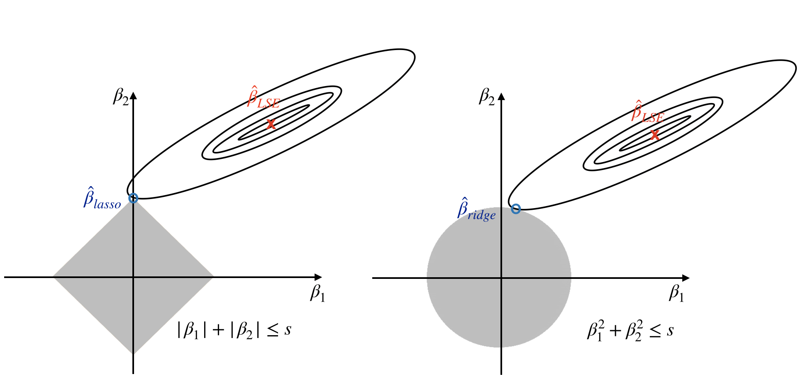
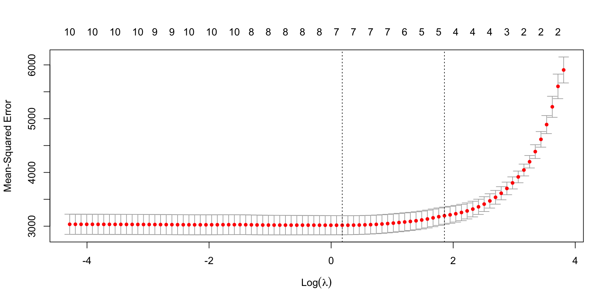

Call:
lm(formula = Y[, 1] ~ X)
Residuals:
Min 1Q Median 3Q Max
-4.1422 -0.8758 0.0877 0.9065 5.2442
Coefficients:
Estimate Std. Error t value Pr(>|t|)
(Intercept) 4.816e-16 7.378e-02 0.000 1.000
X208748_s_at 3.435e-01 7.175e-02 4.787 2.53e-06 ***
X208749_x_at 2.109e-01 4.395e-01 0.480 0.632
X210142_x_at -2.912e-01 3.464e-01 -0.841 0.401
X213819_s_at 1.803e-01 9.005e-02 2.002 0.046 *
---
Signif. codes: 0 '***' 0.001 '**' 0.01 '*' 0.05 '.' 0.1 ' ' 1
Residual standard error: 1.368 on 339 degrees of freedom
Multiple R-squared: 0.1013, Adjusted R-squared: 0.09073
F-statistic: 9.556 on 4 and 339 DF, p-value: 2.481e-07High-dimensional regression
Advanced Statistics and Data Analysis
Davide Risso
Ridge regression
Least squares estimator
The least squares estimator, given by \[ \hat{\beta}=(X^\top X)^{-1} X^\top y \]
is the MLE of \(\beta\), unbiased and \[ \hat{\beta} \sim \mathcal{N}_p(\beta, \sigma^2 (X^\top X)^{-1}) \]
A possible issue: colinearity
Remember that if \(X\) is not full rank, \(X^\top X\) is singular and we cannot compute the least squares estimate.
When \(p>n\) we are guaranteed to have colinearity.
An ad hoc solution?
We could think of an ad hoc fix to solve this problem.
For instance, we could add a small constant to the diagonal of \(X^\top X\) to make it invertible.
In fact, while \(X^\top X\) is not invertible, \(X^\top X + \lambda I\) is.
In other words, we can define a new estimator \[ \hat{\beta}(\lambda) = (X^\top X + \lambda I)^{-1}X^\top y, \] for some \(\lambda \geq 0\).
Ridge regression
With
\[ \hat{\beta}(\lambda) = (X^\top X + \lambda I)^{-1}X^\top y, \]
we just defined ridge regression, a shrinkage method designed to improve the estimation of \(\beta\), particularly important when \(p\), the number of covariates, is large.
Shrinkage effect
Consider an orthonormal design \(X\), i.e., such that \(X^\top X = I\).
In this case the ridge regression estimate is \[ \hat{\beta}(\lambda) = (1+\lambda)^{-1} \hat{\beta}, \] from which it is clear to see how \(\hat{\beta}(\lambda)\) is a shrunken version of \(\hat{\beta}\).
The larger the \(\lambda\) the bigger the shrinkage.
Shrinkage effect
When \(X^\top X\) is full rank, the ridge estimator can be written as a linear combination of the MLE: \[ \hat{\beta}(\lambda) = W_\lambda \hat{\beta}, \] where \[ W_\lambda = (X^\top X + \lambda I)^{-1}X^\top X. \] Shrinkage holds in general, in the sense that the norm of the ridge estimator decreases as \(\lambda\) increases.
Penalized regression
Another way to see ridge regression is as the solution to the following minimization problem: \[ \hat{\beta}(\lambda) = \text{argmin}_\beta \{|| y - X\beta ||^2 + \lambda || \beta ||^2 \}, \] where \(|| \beta ||^2 = \sum_j \beta_j^2\) is known as the L2 norm.
This model is known as penalized least squares, penalized likelihood, or more generally, regularized regression.
The idea is that we penalize the likelihood for large values of \(\beta\), so that solutions closer to zero are preferred.
Penalized regression
Bias-Variance tradeoff
We are (deliberately) introducing a bias, but this may be still advantageous because we reduce the variance.
Scale of \(X\)
Linear regression is equivariant under scale transformations of the variables \(x_j\),
This essentially mean that if we scale a covariate, i.e., \(\tilde{x}_j = x_j/s_j\), with \(s_j>0\),
The least squares fits are the same, with the straightforward solution: \(\tilde{\beta}_j = s_j \hat{\beta}_j\).
This is not true for ridge regression.
Changing the scale of the columns of \(X\) will generally lead to different fits.
Scale of \(X\)
The penalty term \(|| \beta ||^2 = \sum_j \beta_j^2\) treats all the coefficients equally.
This makes sense if all the covariates are on the same scale. Furthermore, we do not typically want to penalize the intercept.
In practice, we center and scale the covariates and the intercept is estimated separately as \(\bar{y}\).
Ridge regression and correlation
While it is necessary to use a penalty term when there is exact collinearity or \(p>n\), it may be useful to do so even when the least squares estimator can be used.
For instance, when there is correlation between covariates, shrinkage often leads to lower standard errors.
Example: ERBB2 gene expression
The FLOT-1 gene has been shown to regulate the gene ERRB2, which is an important gene involved in breast cancer.
Microarrays are a technology that measures the gene expression by using different probes per gene. Here, we regress the first probe of the ERBB2 gene on the values of the four FLOT-1 probes.
As one would expect the four probes are correlated.
Example: ERBB2 gene expression
Example: ERBB2 gene expression
Example: ERBB2 gene expression

Example: ERBB2 gene expression
| lm | ridge | |
|---|---|---|
| X208748_s_at | 0.343 | 0.311 |
| X208749_x_at | 0.211 | 0.063 |
| X210142_x_at | -0.291 | -0.171 |
| X213819_s_at | 0.180 | 0.170 |
The lasso
Sparse linear regression
Many problems are sparse, meaning that the true \(\beta\) has only few elements that are different from zero: \[ \| \beta \|_0 = \{j : \beta_j \neq 0\} \quad \text{small compared to } p. \]
This is called the \(\ell_0\) “norm”.
Recall penalized regression
Recall that one way to see ridge regression is as the solution to the following minimization problem: \[ \hat{\beta}(\lambda) = \text{argmin}_\beta \left\{|| y - X\beta ||^2_2 + \lambda || \beta ||^2_2 \right\}. \]
It would seem natural to define a new estimator, \[ \hat{\beta}(\lambda) = \text{argmin}_\beta \left\{|| y - X\beta ||^2_2 + \lambda || \beta ||_0 \right\}. \] but this is not a convex function, hence it is difficult to optimize.
The lasso
One solution is to use the \(\ell_1\) norm, which is a proper norm and leads to a convex problem:
\[ \hat{\beta}(\lambda) = \text{argmin}_\beta \left\{|| y - X\beta ||^2_2 + \lambda || \beta ||_1 \right\}. \]
It can be shown that this is equivalent to solving the following: \[ \min_{\beta} \sum_{i=1}^n \left(y_i - \sum_{j=1}^p x_{ij}\beta_j\right)^2 \quad \text{subject to } || \beta ||_1 \leq t, \]
where \(|| \beta ||_1 = \sum_{j=1}^p |\beta_j|\) is the \(\ell_1\) norm of the coefficient vector and \(t\) is a user-specified parameter.
Ridge, with more sparsity
Of course this is much related to ridge regression, which can be obtained by substituting the constraint \(|| \beta ||_2 \leq t\).
A big practical difference is that the lasso’s solution typically has many \(\beta_j\)’s exactly equal to 0, which is not the case for ridge.
This is why the lasso can be used as a variable selection and shrinkage method, while ridge regression only shrinks the estimates.
Hence the name: Least Absolute Shrinkage and Selection Operator (LASSO).
L1 vs L2 penalty
Why sparsity
Intuitively, it is clear that since \(p>n\), the parameters can be estimated reasonably well only if there is some level of sparsity.
If \(p>n\) and the true model is not sparse, then the number of samples \(n\) is too small to allow for accurate estimation of the parameters.
But if the true model is sparse, so that only \(k < n\) parameters are actually nonzero in the true underlying model, then we can estimate the parameters effectively, using the lasso and related methods, even if we do not know which \(k\) parameters are nonzero!
Preliminaries
Consider a set of \(n\) observations, on which we measure a response variable \(y = (y_1, \ldots, y_n)\) and a set of \(p\) covariates \(X\) (\(n \times p\) matrix).
Typically, we standardize the predictors so that each column of \(X\) has mean 0 and variance 1.
For convenience, we also assume that \(y\) has been centered to have mean 0, so that we can avoid the intercept in our equations.
The lasso for linear models
The most convenient way to state the lasso is as a minimization problem in Lagrangian form: \[ \min_{\beta \in \mathbb{R}^p} \left\{\frac{1}{2n}||y-X\beta||_2^2+\lambda ||\beta||_1 \right\}, \quad \text{for some } \lambda \geq 0. \]
Note that the term \(1/2n\) can be omitted, but dividing by 2 is convenient for minimization and dividing by \(n\) makes values of \(\lambda\) comparable across sample sizes.
The penalty parameter
The parameter \(\lambda\), controls the complexity of the model.
To estimate the best value of \(\lambda\), the most used strategy is to split the data randomly into training and test sets, fitting the model on the training set and estimating its performance in the test set.
If we repeat this procedure \(K>1\) times, it is called the cross-validation.
Typical value of \(K\) are between 5 and 10 for K-fold cross-validation or \(n\) for the so-called leave-one-out cross-validation.
Cross-validation
In cross-validation we fix one group as the test set and use the remaining \(K-1\) groups as training.
We fit the model with different values of \(\lambda\) in the training set and use the test set to comparatively evaluate the performance, usually in terms of mean-squared prediction error.
Note that the process is repeated \(K\) times, so we have \(K\) estimates of the prediction error that then is averaged to obtain the cross-validation error curve.
Cross-validation
A natural choice of \(\lambda\) is the value that minimizes the cross-validation mean-squared error.
If we want to emphasize sparsity, we can use the “one-standard-error rule”, choosing the largest value of \(\lambda\) that yields an error within one standard error above its minimum value.
In R: the glmnet() function
In R there is a very convenient function that implements the lasso, ridge and elastic net algorithms.
For simplicity, we presented the lasso and ridge regression for the linear model, but the theory works just fine for GLMs too.
We simply need to specify the family argument.
Example: the diabetes data
The data consists of observations on 442 patients:
- the response is a quantitative measure of disease progression.
- There are ten baseline variables: age, sex, body-mass index, average blood pressure, and six blood serum measurements
We standardize the data to have 0 mean and unit L2 norm.
The ridge solution path
The lasso solution path
Choice of \(\lambda\)
Choice of \(\lambda\)
Computational aspects
Computation on the lasso solution
The lasso can be seen as a convex minimization problem, or as a quadratic program with a convex constraint.
There are many sophisticated quadratic programming methods to solve the lasso.
We will start from a simple and effective algorithm that gives insights into how the lasso works.
Single predictor: soft thresholding
First, consider a simpler setting in which we have only one predictor, say \(z\).
The problem becomes \[ \min_{\beta \in \mathbb{R}} \left\{\frac{1}{2n} \sum_{i=1}^n (y_i-z_i\beta)^2+\lambda |\beta| \right\}. \]
The standard approach would be to take the gradient with respect to \(\beta\) and set it to zero. However, the absolute value function does not have a derivative at \(\beta=0\).
Single predictor: soft thresholding
First note that the minimization problem, in the case of a single standardized predictor, is equivalent to \[ \min_{\beta \in \mathbb{R}}\left\{\frac{1}{2} (\beta-\tilde{\beta})^2+\lambda |\beta|, \right\}. \] where \(\tilde{\beta}\) is the least squares estimator.
If \(\beta>0\), we can differentiate to get \[ \beta - \tilde{\beta} + \lambda =0, \] which leads to \(\beta = \tilde{\beta} - \lambda\) as long as \(\tilde{\beta}>0\) and \(\lambda<\tilde{\beta}\); otherwise 0 is the minimum.
Single predictor: soft thresholding
More generally \[ \hat{\beta}(\lambda) = \begin{cases} \tilde{\beta} - \lambda \quad \text{if } \tilde{\beta} > \lambda, \\ 0 \quad \text{if } |\tilde{\beta}| \leq \lambda, \\ \tilde{\beta} + \lambda \quad \text{if } \tilde{\beta} < - \lambda. \end{cases} \]
This can be written more generally as \[ \hat{\beta}(\lambda) = S_\lambda\left(\frac{1}{n} \sum_{i=1}^n z_i y_i\right), \] where \[ S_\lambda = \text{sign}(x)(|x|-\lambda)_+ \] is the soft-thresholding operator and \(t_+\) denotes the positive part of \(t\) and is equal to \(t\) if \(t>0\) and 0 otherwise.
Single predictor: soft thresholding
Multiple Predictors: Cyclic Coordinate Descent
Using this intuition from the univariate case, we can develop a coordinate-wise scheme for the full lasso problem.
We can cycle through the predictors in some fixed arbitrary order \(j=1, \ldots, p\), and at the \(j\)-th step, we update the estimate of the coefficient \(\beta_j\) by minimizing the objective function for predictor \(j\) while holding fixed all the other \(\hat{\beta}_k\) for each \(k \neq j\) at their current values.
Cyclic Coordinate Descent
More formally, we can rewrite the objective function \[ \frac{1}{2n}\sum_{i=1}^n \left(y_i - \sum_{k \neq j} x_{ik}\beta_k - x_{ij}\beta_j\right)^2 + \lambda \sum_{k \neq j} |\beta_k|+\lambda|\beta_j|, \] in terms of the partial residuals \[ r_i^{(j)} = y_i - \sum_{k\neq j}x_{ik}\hat{\beta}_k. \]
Cyclic Coordinate Descent
Minimizing w.r.t \(\beta_j\), we get the update rule \[ \hat{\beta}_j(\lambda) \leftarrow S_\lambda \left( \frac{1}{n} \sum_{i=1}^n x_{ij} r_i^{(j)} \right). \]
Note that this is the univariate regression coefficient of the partial residual \(r_i^{(j)}\) on the \(j\)-th variable \(x_j\).
An equivalent form of the update is \[ \hat{\beta}_j(\lambda) \leftarrow S_\lambda \left( \hat{\beta}_j + \frac{1}{n} \sum_{i=1}^n x_{ij} r_i \right), \] where \(r_i = y_i - \sum_{j=1}^p x_{ik}\hat{\beta}_j\) are the full residuals.
Cyclic Coordinate Descent
Starting with any values of \(\beta_j\), the update is repeated sequentially on all \(j\)’s until convergence.
This corresponds to a cyclical coordinate descent method, which can be proved to converge, under some mild conditions.
Note that this works because the lasso minimization problem is convex, and hence has no local minima.
Special case
When \(\lambda=0\), the update rule corresponds to a univariate regression of the partial residual onto each predictor.
If \(X\) is of full rank, the algorithm will converge to the least squares solution.
Multiple values of \(\lambda\)
In practice, we often need to compute the solution for multiple values of \(\lambda\), say, in a cross-validation setting.
One efficient way to proceed is to set \[ \lambda_{\max} = \max_j \left\vert\frac{1}{n} \sum_{i=1}^n x_{ij} y_i \right\vert \] so that the solution is the vector \(\beta=0_p\) and then proceed in the following way:
- decrease \(\lambda\) by a small amount
- run the coordinate descent algorithm until convergence starting from the previous solution as a “warm start”
In this way, we can efficiently produce the solution over a grid of \(\lambda\) values.
Computational efficiency
The Cyclic Coordinate Descent algorithm is efficient for two reasons:
- the update rules are available in closed form.
- it exploits the sparsity of the problem: most coefficients will not move from 0 when decreasing \(\lambda\).